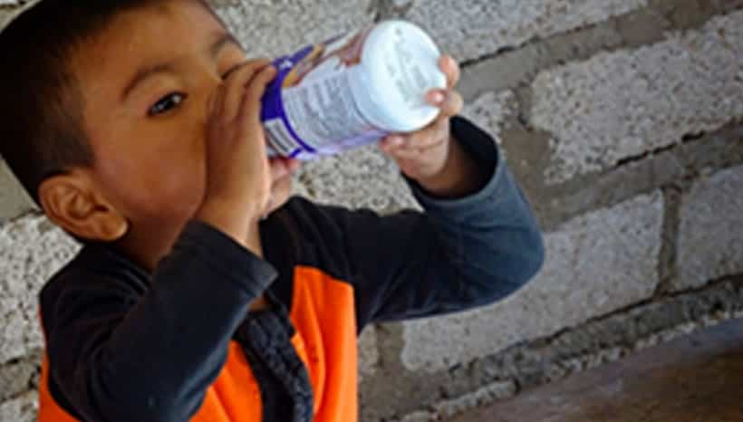
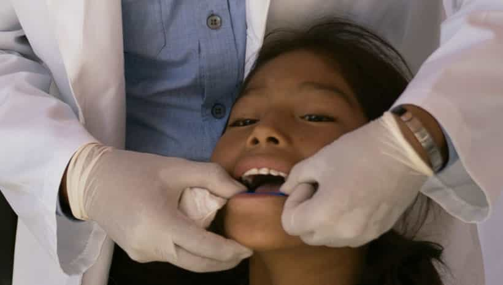
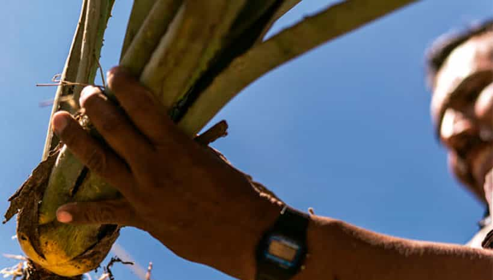
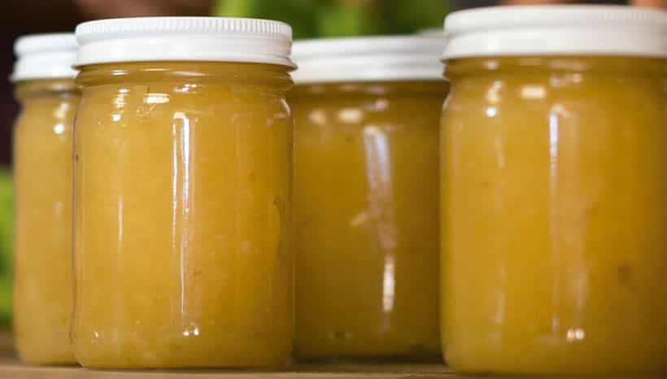
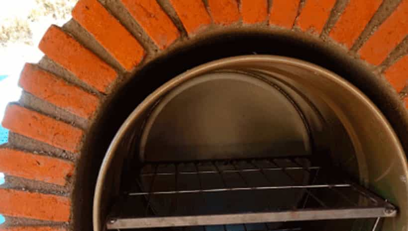
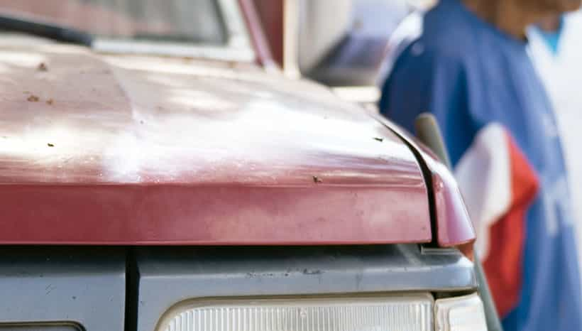

Medicina general

Medicina general
- Consultas
- Pláticas sobre prevención de enfermedades
- Campañas de desparasitación, control de embarazo y nutrición en niños
- Campañas de detección de enfermedades crónico-degenerativas

Odontología
- Consultas
- Pláticas de prevención de enfermedades dentales
- Talleres de técnica de cepillado bucal
- Campañas de aplicación de flúor
Bienestar social

Proyectos productivos
- Cultivo de agave
- Huertas frutícolas
- Cultivo de hortalizas orgánicas
- Cría de aves de corral de doble propósito
- Agroindustria

Capacitaciones
- Cocina, repostería, agroindustrias y nutrición
- Técnicas de consecha de agua y conservación de suelo
- Manejo de aves de corral de doble propósito
- Construcción de camas de siembra para hortalizas
- Podadas en arboles frutales
- Plagas, enfermedades y control biológico en hortalizas, frutales y agave
- Nutrición en hortalizas, árboles frutales y agave

Tecnologías alternativas
- Construcción de fogones ahorradores de leña, cisternas de ferrocemento captadoras de agua pluvial y hornos para pan.

Ayuda comunitaria
- Despensas
- Cobijas
- Juguetes
- Útiles escolares
- Enseres domésticos
- Ropa